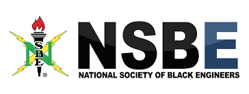

Hello, my name is Kiera Brown, and I'm studying computer science at Howard University. I'm very passionate about devloping tech to help the community. Some of my hobbies include sleeping, dancing, cook, and traveling.
Broadening the tech world to underrepresented groups has always been something I’m passionate about. Accessibility and inclusion are extremely important. Since I first discovered that I wanted to pursue a career tech, I knew that I would be working in an environment where both women and African Americans were underrepresented, and I wanted to do something to change that. During my sophomore year at Howard University, I volunteered with NSBE Jr. by coaching a robotics team and co-teaching a programming course that was sponsored by Blacks at Microsoft. I also taught at NSBE SEEK which is a free summer program to help expose children from underrepresented groups to the vast world of engineering. In both of these programs, I fought to negate stereotypes of what kids think an engineer or computer scientist looks like. By being a black woman in tech, I understand that I serve as a role model to others that plan to follow in similar footsteps.